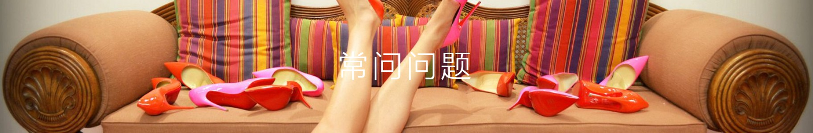
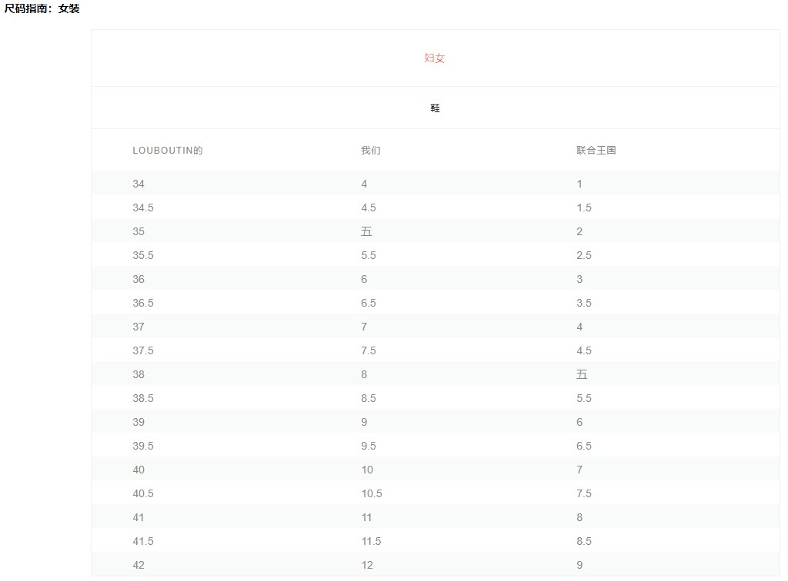

-
1.我如何在线下定单？
+
- 选择项目或选择尺寸后，点击“添加到购物袋”将产品添加到购物袋。要开始结帐流程，请点击购物袋标签下的“订购”。在这里，您可以编辑购物袋并查看购买，然后点击“继续结算”。
- 1.登录您的帐户，创建新帐户或以访客身份结帐。
- 2.通过结帐提示按照说明进行操作。
- 3.填写结算信息，包括持卡人的正确姓名，地址和电话号码。
- 4.运送到帐单地址或选择“运送到备用地址”并填写送货信息。请注意，Christian Louboutin保留将订单发送至账单地址的权利。
- 5.使用信用卡或Paypal完成付款信息。
- 6.查看您的订单并按提交。
-
2.我的订单一经放置,我可以更改或修改吗？
+
- 请通过电话+1 888 856 8247（1888-8LOUBIS）与我们联系，以尽快取消或修改您的在线订单。
- 订单处理通常在提交购买后开始。因此，我们无法保证能够满足您的要求。
-
3.你接受国际信用卡吗？
+
- 不幸的是，网上精品店目前无法接受国际信用卡。您的结算信息和运送信息必须在您购物的区域内。例如，CL
Canada的所有订单必须包含加拿大的结算和运送详细信息，CL美国的订单分别相同。但是，为方便起见，我们接受PayPal。
-
4.创建Christian Louboutin在线帐户有什么好处？
+
- 使用Christian Louboutin在线帐户，您可以使用存储的地址管理您的个人信息并快速完成结账。
- 您可以关注在线订单的进度，访问在线购买历史记录以及管理您的愿望清单。不要忘记通过订阅我们的时事通讯与LouboutinWorld保持联系！
-
5.如何检索Christian Louboutin在线帐户密码？
+
- 在登录页面上，单击“忘记密码”并输入与您的Christian Louboutin在线帐户关联的电子邮件地址。
- 系统会发送一封电子邮件，其中包含重置密码的链接。您也可以致电+ 1-888-856-8247联系在线销售助理，以协助重置密码。
-
6.为什么有些物品被列为预购？
+
- 我们为客户提供在线物理上可用之前预订物品的机会。该物品是为您保留的，然后在库存到达我们的仓库时自动收取和运送。
- 预订商品必须单独收费和运输。请注意，产品到货日期是估计值，由于生产和发货时间的变化而无法保证。
-
7.我可以订购礼品吗？
+
- 我们为任何鞋子，配件或手提包购买提供免费礼品包装。在线输入付款信息之前，只需在结账时选择礼品包装选项即可。
- 对于美容产品，可根据要求提供Christian Louboutin Beauty礼品袋。
-
8.我可以在订单中附上礼品信息吗？
+
- 如果您选择包装订单礼品的选项，您还可以选择向礼品收件人输入一个小纸条。选择礼品包装后，发票将自动打印而不显示价格。
- 对于美容产品，可根据要求提供Christian Louboutin Beauty礼品袋。
-
9.物品在我的购物袋中停留多长时间？
+
- 购物袋中不会保留商品，但只要商品在线可用，商品就会保持可见状态。要保护该项目，您必须完成结帐流程
- 对于美容产品，可根据要求提供Christian Louboutin Beauty礼品袋。
-
10.我可以在Christian Louboutin.com上购买每种产品的单位数量？
+
- 由于我们的商品性质有限，每种款式最多可以购买三个单位。超出此数量的额外数量可由精品经理自行决定购买。
-
11.我可以购买在线礼品券吗？
+
- 礼券只能在独立的Christian Louboutin精品店购买和兑换。点击此链接找到离您最近的商店。
返回
-
1.什么是Christianlouboutin.com的退货政策？
+
- Christian Louboutin将在订单收到邮寄后14天内以原始状态接受退货/换货。退回的商品必须附有订单发票，原装鞋盒，防尘袋，鞋跟水龙头和粘性鞋底标签。
- Christian Louboutin保留拒绝任何不符合上述要求的商品退货或换货的权利。如果您的包裹不被接受，它将被退回给您并且不能退款。
-
直接交换只能用于相同样式的不同大小，或者对于具有完全相同值的另一个项目。交换取决于处理时所需物品的可用性，我们将尽最大努力确保您的要求得到满足。如果要求的商品无法满足您的兑换，我们将退还原始付款方式。所有交易所订单均通过免费地面运输发货。请注意，我们无法促进PayPal交易的直接交换。交换的订单只能退还退款。
-
2.如何退回/交换Christianlouboutin.com上的订单？
+
- 请按照以下步骤退回/更换您的在线订单：
- 1.请按照以下步骤退回 登录您的Christian Louboutin在线帐户。在“订单”页面上，找到要返回的订单，然后单击“创建退货”。
- 2.请按照以下步骤退回 如果您以访客身份结帐，请在此处创建退货打开新窗口。 Opens in New Window 输入原始购买时的电子邮件地址和订单号。
- 3.请按照以下步骤退回
选择您要返回的项目并确定退货原因。如果出现提示，请在注释字段中提供有关退货的其他详细信息。提交后，将创建一个RMA，并将确认信息发送到原始购买的电子邮件地址。下载并打印预付费退货标签。
- 4.请按照以下步骤退回 将标签贴在您的包装箱上; 如果使用原始包装，请确保原始标签已完全移除或覆盖。不要将Christian Louboutin盒暴露回鞋。
- 5.请按照以下步骤退回 将您的包裹放在当地UPS工作人员的位置，并获得一张带有跟踪号码副本的收据。
- 6.请按照以下步骤退回 要换取其他商品或尺寸，请按照上述说明退回原始商品，并在方便时下新订单。一旦我们的履行中心收到物品，您将收到退回商品的退款。
- 7.请按照以下步骤退回直接交易需视供应情况而定，但可通过+ 1-888-856-8247联系在线销售助理来索取
-
3.退款需要多长时间？
+
- 从包裹抵达仓库之日起2-10个工作日内退款。信用卡处理完毕后，我们会通过电子邮件通知您。根据您的金融机构，信用额可能需要额外的工作日才能发布到您的帐户。
-
4.运费是否可退还？
+
- 原始订单的运费不予退还。我们提供免费退货运费，使用我们的预付退货标签。
-
5.我可以将我的在线订单退回/交换给Christian Louboutin精品店吗？
+
- 在线订单目前无法退回Christian Louboutin精品店。所有商品必须按照我们的政策寄回我们的仓库设施。
-
6.我可以退回或兑换我作为礼物收到的订单吗？
+
- 所有在线礼品订单均可根据我们的在线退货政策退回我们的仓库。退回的商品将以原始付款方式存入。在线订单目前无法退回或交换给精品店。
-
7.如果我的订单在收到后损坏怎么办？
+
- 我们强烈建议所有客户在卸下透明粘性鞋底标签之前和处理任何原始包装之前，在交货时彻底检查商品。如果您发现商品有缺陷或损坏，请立即致电+
1-888-856-8247与我们联系。为了评估索赔，我们经常要求提供损坏物品和/或原始包装的照片。
-
8.什么是翻新费？
+
- 我们的红色鞋底非常精致，我们无法接受看似磨损或损坏的鞋子的退货。红色鞋底必须处于完美状态。
- 鞋底出现损坏的返回鞋可能会导致翻新费用，或者如果无法恢复到可销售状态则可能会被拒绝。如果适用，费用将从您的退货中扣除，费用将根据维修级别而有所不同。
- 为了避免在试穿时给我们的鞋底造成任何划痕或压痕，请务必使用干净的地毯表面。
适合和尺寸的
-
1.我怎么知道我的体型？
+
- 1.Christian Louboutin鞋子的尺码建议因款式而异。一般来说，我们的鞋子尺寸合适，但每个人的脚都不同，尺寸偏好仅取决于佩戴者。
- 2.购买Christian Louboutin鞋子时最常见的误解是较大的尺寸会增加鞋头宽度并降低材料的紧密度; 实际上，尺寸上升只会影响长度。
- 3.请记住，我们的鞋子都没有预拉伸，但我们的大多数材料会随着时间的推移而开放。多次穿着后，大多数材料会伸展并形成穿着者脚部的形状，形成完美贴合。
- 4.为了帮助确定差异，我们的在线专家会尝试各种风格，并在我们的网站上提供一般的尺寸建议。点击产品后，您可以在尺寸表上方的右侧找到“适合建议”。在左侧，“尺寸指南”显示直接转换为Louboutin尺寸。
- 5.我们提供这些参考资料以帮助您找到最合适的参考资料，但如果您有其他问题，请致电+ 1-888-856-8247联系我们经验丰富的客户服务团队，或发送电子邮件至
customerservice.usa@us.christianlouboutin。 com为美国和customerservice.ca@us.christianlouboutin.com为CA.
-
2.尺寸表
+
- 

一般的问题
-
1.我如何随时了解Christian Louboutin的更新？
+
- 线上
- 要及时了解Christian Louboutin的最新信息，请通过您的帐户订阅我们的“时事通讯”。
- 社交媒体
- 在以下社交媒体渠道关注@Louboutinworld：
- Instagram 打开了一扇新窗口。
- Facebook 打开一扇新窗口。
- Twitter 打开一个新窗口。
- 穿着Monsieur Louboutin的作品时，请使用标签#LouboutinWorld或#LouboutinHomme！
- 精品店
-
要接收当地精品店的新客人，请通过customerservice.usa@us.christianlouboutin.com与美国客户联系，并将customerservice.ca@us.christianlouboutin.com与CA客户联系，以便添加到他们的新到货名单。
-
2.我如何在Christian Louboutin申请工作？
+
- 有关Christian Louboutin的就业机会，请访问我们的Christian Louboutin
LinkedIn页面。或者，您可以将简历直接发送至ResumesTHEAMERICAS@us.christianlouboutin.com。
-
3.如何开设批发账户？
+
-
目前，我们的批发团队不接受新的合作伙伴。欢迎您通过电子邮件向我们发送电子邮件，发送电子邮件至customerservice.usa@us.christianlouboutin.com，我们的美国客户，以及customerservice.ca@us.christianlouboutin.com，我们的CA客户。代表将把它转发给批发部门以供将来考虑。
-
4. Christian Louboutin打击假冒产品的做法是什么？
+
- 我们公司一直在打击假冒Christian Louboutin产品的分销。
- 我们的法律团队实行“零容忍”政策，并成功删除了无数销售假冒和侵权Christian
Louboutin商品的网站。尽管我们不断努力，网站每天都会出现并消失。因此，我们建议您仅通过授权零售商或直接向我们购买，以保护自己。
- 要了解有关我们的防伪计划的更多信息，请访问我们的Stopfake专用页面。
-
5.我如何才能对物品进行身份验证？
+
- Christian Louboutin商品的真实性依赖于众多因素，因此公司政策要求我们亲自查看商品以确定真实性。
- 运送包裹的一方需承担所有运费。
- 如果商品被视为伪造商品，则会被没收，并且您将收到一封确认收到假冒Christian Louboutin商品的官方信函。这些陈述仅在收到假货后发出。
- 相反，如果货物是真实的，它们将被退还给您。
- 请访问我们的Stopfake专用页面并联系我们的Stopfake团队，看看您是否有资格进行身份验证过程。
- 不幸的是，当通过寄售商店或在线拍卖网站等私人供应商进行购买时，我们无法提供真实性服务。
-
6.如何报告假冒的Christian Louboutin网站？
+
- 要报告销售假冒Christian Louboutin产品的网站，请访问Stopfake dedeicated页面，并通过内置专有在线商店检查器的联系表格或部分联系我们的Stopfake团队。